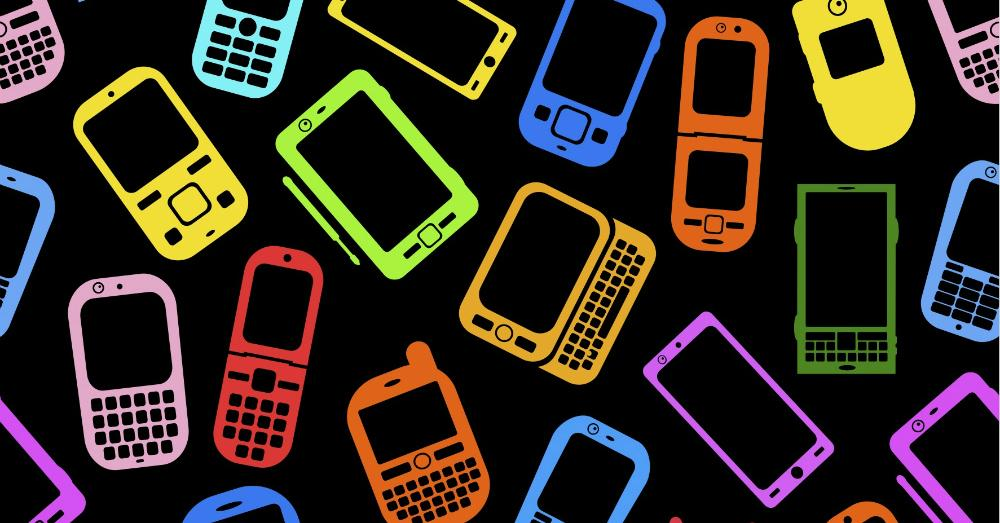

The Phone Doctor

ABOUT US
At The Phone Doctor
, we repair a huge range of devices from iPhone, iPad, Samsung Galaxy, HTC, Sony Xperia, Google Nexus and many more. No matter what the fault is the chances are we can fix it for you, we repair hundreds of devices every single day and fix everything from iPhone screens to Samsung Galaxy charging ports.
Buying a refurbished mobile phone has many advantages. Not only is it cheaper than buying a brand new model, it also allows you to be free and find the best deal for you instead of being stuck on a contract and paying monthly bills and add on costs.